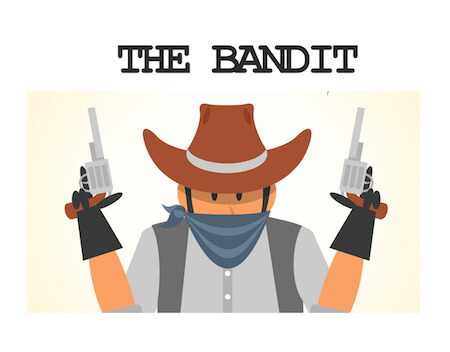
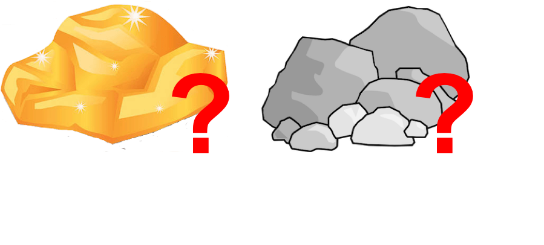
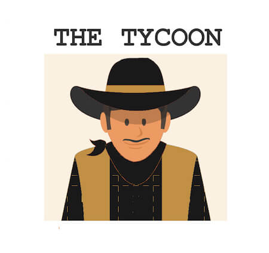
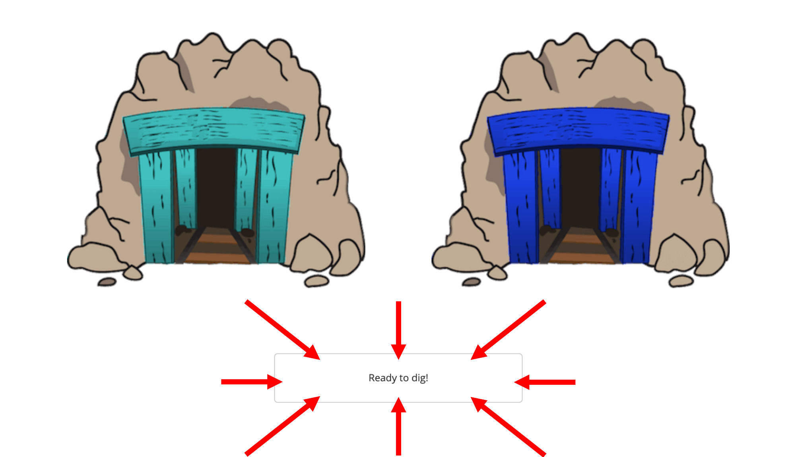
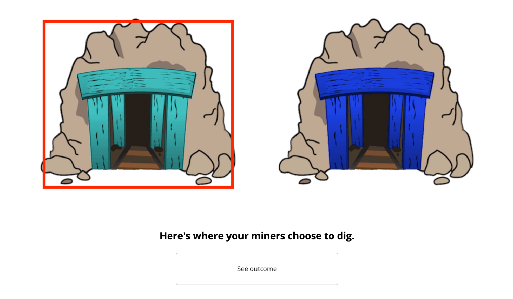
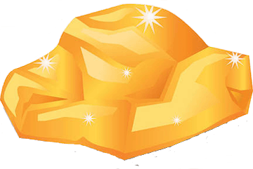

<!doctype html>
<html>
<head>
	<title>Wild West Study</title>

	<!-- load standard plugins from pavlovia -->
	<!-- <script type="text/javascript" src="lib/vendors/jspsych-6.1.0/jspsych.js"></script>

	<script type="text/javascript" src="lib/vendors/jspsych-6.1.0/plugins/jspsych-external-html.js"></script>
	<script type="text/javascript" src="lib/vendors/jspsych-6.1.0/plugins/jspsych-html-button-response.js"></script>
	<script type="text/javascript" src="lib/vendors/jspsych-6.1.0/plugins/jspsych-survey-multi-choice.js"></script>
	<script type="text/javascript" src="lib/vendors/jspsych-6.1.0/plugins/jspsych-survey-text.js"></script>
	<script type="text/javascript" src="lib/vendors/jspsych-6.1.0/plugins/jspsych-instructions.js"></script> -->

	<!-- load standard plugins if running locally -->
	<script type="text/javascript" src="jspsych-6.1.0/jspsych.js"></script>

	<script type="text/javascript" src="jspsych-6.1.0/plugins/jspsych-external-html.js"></script>
	<script type="text/javascript" src="jspsych-6.1.0/plugins/jspsych-html-button-response.js"></script>
	<script type="text/javascript" src="jspsych-6.1.0/plugins/jspsych-survey-multi-choice.js"></script>
	<script type="text/javascript" src="jspsych-6.1.0/plugins/jspsych-survey-text.js"></script>
	<script type="text/javascript" src="jspsych-6.1.0/plugins/jspsych-instructions.js"></script>

	<!-- load standard packages from pavlovia -->
	<!-- <script type="text/javascript" src="lib/vendors/jquery-2.2.0.min.js"></script>
	<script type="text/javascript" src="lib/jspsych-pavlovia-3.0.6.js"></script> -->

	<!-- load custom plugins -->
	<script type="text/javascript" src="jspsych-6.1.0/plugins/jspsych-feedback-twomines-randgen.js"></script>
	<script type="text/javascript" src="jspsych-6.1.0/plugins/jspsych-readydig.js"></script>
	<script type="text/javascript" src="jspsych-6.1.0/plugins/jspsych-two-initial-choice-forced.js"></script>
	<script type="text/javascript" src="jspsych-6.1.0/plugins/jspsych-button-response-ehp.js"></script>

	<!-- load style sheet -->
	<link href="jspsych-6.1.0/css/jspsych.css" rel="stylesheet" type="text/css"></link>


<link href="https://ajax.googleapis.com/ajax/libs/jqueryui/1.10.3/themes/black-tie/jquery-ui.min.css" rel="stylesheet" type="text/css"></link>
	<head>
	<style>
	</style>
	</head>

</head>
<body>
</body>
<script>

// Behavioral Task for Exp 1 from Dorfman, et al., 2018, Psych Science //
// Hayley Dorfman //

// Modified by Emily Liquin //


//SUBJECT IDENTIFIER
var identifier = jsPsych.randomization.randomID(10);
jsPsych.data.addProperties({subject: identifier}); //this adds a random alpha-numeric string (10 digits) to the data as a subject ID

var prolific_id = jsPsych.data.getURLVariable('PROLIFIC_PID')
var study_id = jsPsych.data.getURLVariable('STUDY_ID')
var session_id = jsPsych.data.getURLVariable('SESSION_ID')
jsPsych.data.addProperties({prolific_id: prolific_id, study_id: study_id, session_id: session_id}); //this adds a random alpha-numeric string (10 digits) to the data as a subject ID


var timeline = [];


//PAVLOVIA INITIALIZE
/* This simple command will initialize the connection with pavlovia.org */
// var pavlovia_init = {
// 			type: "pavlovia",
// 			command: "init"
// 		};

// timeline.push(pavlovia_init);


// note - for this study, consent was completed on Qualtrics, then participants were redirected to the experiment on Pavlovia.


// Add all images to be preloaded
var all_images = ["img/teal_mine.png","img/teal2_mine.png","img/green2_mine.png",
"img/purp2_mine.png","img/lavender_mine.png",
"img/orange3_mine.png", "img/orange2_mine.png", "img/orange2_mine_selected.png",
"img/pink1_mine.png","img/pink2_mine.png","img/red_mine.png",
"img/yellow_mine.png","img/gray_mine.png",
"img/blue_mine.png","img/cobalt_mine.png",
"img/teal_mine_selected.png","img/teal2_mine_selected.png","img/green2_mine_selected.png",
"img/purp2_mine_selected.png","img/lavender_mine_selected.png",
"img/orange3_mine_selected.png",
"img/pink1_mine_selected.png","img/pink2_mine_selected.png","img/red_mine_selected.png",
"img/yellow_mine_selected.png","img/gray_mine_selected.png",
"img/blue_mine_selected.png","img/cobalt_mine_selected.png",
"img/gold.png", "img/rock.png",
"img/bandit.jpg","img/sheriff.jpg","img/tycoon.jpg","img/tycoon_bg.jpg","img/bandit_bg.jpg","img/sheriff_bg.jpg",
"img/tycoon_rock.png","img/bandit_gold.png",
"img/dig_example.png","img/tycoon_outcome_example.png","img/bandit_outcome_example.png","img/sheriff_outcome_example.png",
"img/condition_example.png","img/instructions_patternonly_bg.jpg",
 "img/outcome_blank.png", "img/tycoon_small.jpg",
"img/money.jpg",
"img/sheriff_outcome_example_slider.png",
"img/bandit_outcome_example_slider.png",
"img/dig_example_ready.png","img/dig_example_2.png",
"img/dig_example_choice.png",
"img/bandit_outcome_example_slider3.png","img/sheriff_outcome_example_slider3.png","img/tycoon_outcome_example_slider3.png",
]

// set rating condition
var cond = jsPsych.data.getURLVariable('cond')

let conda;

if(cond == 1 ){
	conda = 1
} else if(cond == 2 ){
	conda = 2
} else if(cond == 3){
	conda = 3
}


// Assign variable instructions for conditions

var bandit_instructions1 = "<p class='center-content'> It turns out that your mines are under the influence of a dastardly bandit. Occasionally, he sneaks into both of the mines at night, stealing the gold and leaving only rocks behind for the next dig.</p>"+
				"<p class='center-content'></img>"
var bandit_instructions2 = "<p class='center-content'> The bandit visits the mines randomly three nights out of ten. So 30% of the time, you will receive rocks as a result of the bandit's theft regardless of which mine has been chosen, and this is not a true reflection of how much gold or how many rocks the chosen mine contains. </p> "+
				"<p class='center-content'></img>"

	
var sheriff_instructions1 = "<p class='center-content'> It turns out that your mines are under the influence of a sheriff, a prankster who likes to keep miners on their toes. Occasionally, he sneaks into both of the mines and moves things around at night, making it equally likely that you'll find gold or rocks on the next dig.</p>"+
				"<p class='center-content'></img>"
var sheriff_instructions2 = "<p class='center-content'> The sheriff visits the mines randomly three nights out of ten. So 30% of the time, you will receive rocks or gold as a result of the sheriff's prank regardless of which mine has been chosen, and this is not a true reflection of how much gold or how many rocks the chosen mine contains. </p> "+
				"<p class='center-content'></img>"

var tycoon_instructions1 = "<p class='center-content'> It turns out that your mines are under the influence of a charitable gold tycoon. Occasionally, he sneaks into both of the mines at night, leaving behind gold for the miners to find on the next dig.</p>"+
				"<p class='center-content'></img>"
var tycoon_instructions2 = "<p class='center-content'> The tycoon visits the mines randomly three nights out of ten. So 30% of the time, you will receive gold as a result of the tycoon's goodwill regardless of which mine has been chosen, and this is not a true reflection of how much gold or how many rocks the chosen mine contains. </p> "+
				"<p class='center-content'></img>"


// compile instructions and images by condition
var latent_agent_conds = [{condition: "bandit", first_instructions: bandit_instructions1, second_instructions: bandit_instructions2, image: 'img/bandit.jpg'}, {condition: "sheriff", first_instructions: sheriff_instructions1, second_instructions: sheriff_instructions2, image: 'img/sheriff.jpg'}, {condition: "tycoon", first_instructions: tycoon_instructions1, second_instructions: tycoon_instructions2, image: 'img/tycoon.jpg'}]

if(conda == 1){
	var agent_cond = latent_agent_conds[0]
} else if (conda == 2){
	var agent_cond = latent_agent_conds[1]
} else if (conda == 3){
	var agent_cond = latent_agent_conds[2]
}


if(conda == 1){
	agent_cond["slider"] = 'img/learning_slider_bandit.png'
} else if(conda == 2){
	agent_cond["slider"] = 'img/learning_slider_sheriff.png'
} else if(conda == 3){
	agent_cond["slider"] = 'img/learning_slider_tycoon.png'
}


var learning_instructions = "<p class='center-content'> After you get your gold or rocks, you will be asked to consider the following: On some turns, it would be very helpful to learn whether the outcome you received was caused by the " + agent_cond.condition + "'s influence, because it would help you figure out the chosen mine's overall value\u2014that is, its probability of giving you gold as opposed to rocks.</p>"+
					"<p class='center-content'> On other turns, it would not be very helpful to learn whether the outcome you received was caused by the " + agent_cond.condition + "'s influence, because it would not help you figure out the chosen mine's overall value.</p>"+
				"<p class='center-content'> You will use a slider like the one below to rate the extent to which knowing the cause of the outcome would help you figure out the mine's value.</p>"+
				"<p class='center-content'></img>" 


var learning_rating = 	{prompt: "<p class='center-content'><b>In order to figure out the value of this mine, how helpful would it be to know why this outcome occurred (i.e., whether or not the " + agent_cond.condition + " intervened)?</b>", low: "Not at all helpful", high: "Very helpful"};


var rating_instructions = learning_instructions
var rating_prompts = learning_rating


// get block id and weights based on condition
if(agent_cond.condition == "tycoon"){
    var block_id = "benevolent"
    var weights_agent = [1, 0]
} else if (agent_cond.condition == "bandit"){
    var block_id = "adversarial"
    var weights_agent = [0, 1]
} else if (agent_cond.condition == "sheriff"){
    var block_id = "random"
    var weights_agent = [.5, .5]
}


/*define mine images*/
var all_mine_images = [{unsel: "img/teal2_mine.png", sel: "img/teal2_mine_selected.png"},{unsel: "img/green2_mine.png", sel: "img/green2_mine_selected.png"},{unsel: "img/orange2_mine.png", sel: "img/orange2_mine_selected.png"},
{unsel: "img/purp2_mine.png", sel:"img/purp2_mine_selected.png"}, {unsel: "img/lavender_mine.png", sel: "img/lavender_mine_selected.png"}, {unsel: "img/orange3_mine.png", sel: "img/orange3_mine_selected.png"}, 
{unsel: "img/pink1_mine.png", sel: "img/pink1_mine_selected.png"}, {unsel: "img/pink2_mine.png", sel: "img/pink2_mine_selected.png"}, {unsel: "img/red_mine.png", sel: "img/red_mine_selected.png"},
{unsel: "img/yellow_mine.png", sel: "img/yellow_mine_selected.png"}, {unsel: "img/gray_mine.png", sel: "img/gray_mine_selected.png"}, {unsel: "img/blue_mine.png", sel: "img/blue_mine_selected.png"}]

// shuffle mine_images
var mine_image = jsPsych.randomization.shuffle(all_mine_images)
var mine1 = mine_image[0];
var mine2 = mine_image[1];


// // These are the mines for the instructions images - uncomment to get those images
// num_mines = 2
// if(num_mines == 2){
//     var mine_image_prac = [{unsel: "img/teal_mine.png", sel: "img/teal_mine_selected.png"},{unsel: "img/cobalt_mine.png", sel: "img/cobalt_mine_selected.png"}];
// } else {
//     var mine_image_prac = [{unsel: "img/teal_mine.png", sel: "img/teal_mine_selected.png"},{unsel: "img/cobalt_mine.png", sel: "img/cobalt_mine_selected.png"}, {unsel: "img/orange2_mine.png", sel: "img/orange2_mine_selected.png"}];
// }

// var mine_image_prac = [{unsel: "img/teal_mine.png", sel: "img/teal_mine_selected.png"},{unsel: "img/cobalt_mine.png", sel: "img/cobalt_mine_selected.png"}];
// 	var mine1 = mine_image_prac[0]
// 	var mine2 = mine_image_prac[1]

// image for unchosen mine (blank)
var outcome_blank = "img/outcome_blank.png";


//set number of trials for each block
var n_trials = 50; //number of total trials per block


// function to load csv file
function loadFile(filePath) {
  var result = null;
  var xmlhttp = new XMLHttpRequest();
  xmlhttp.open("GET", filePath, false);
  xmlhttp.send();
  if (xmlhttp.status==200) {
    result = xmlhttp.responseText;
  }
  return result;
}

//function to change csv into object
function csvJSON(csv){
	var lines=csv.split("\n");
	var result = [];
	var headers=lines[0].split(",");
	for(var i=1;i<lines.length;i++){
		var obj = {};
		var currentline=lines[i].split(",");
		for(var j=0;j<headers.length;j++){
			obj[headers[j]] = currentline[j];
		}
		result.push(obj);
	}	
	return result; //JavaScript object
// return JSON.stringify(result); //JSON
}


if(agent_cond.condition == "bandit"){
	var condition_num = 1
	var condstring = '"bandit"'
} else if (agent_cond.condition == "tycoon"){
	var condition_num = 2
	var condstring = '"tycoon"'
} else if (agent_cond.condition == "sheriff"){
	var condition_num = 3
	var condstring = '"sheriff"'
}

// get yoked participant
var all_participants = loadFile("sequences/yoking_options.csv")

all_participants = csvJSON(all_participants)

// subset all_participants to only records where agent_condition matches agent_cond.condition
var condition_match_participants = all_participants.filter(function(d){
	return d['"agent_condition"'] == condstring
})


// get a random participant from there
var yoked_participant = jsPsych.randomization.sampleWithReplacement(condition_match_participants, 1)[0]['"yoked_participant"']

// remove extra quotes
yoked_participant = yoked_participant.replace(/['"]+/g, '')

// create csv name that we want to pull
var csvname = "sequences/" + yoked_participant + "." + condition_num + ".csv"


var csv = loadFile(csvname)

var fullseq = csvJSON(csv)


var Choice_Seq = []
for(var i=0;i<50;i++){
	var seq = fullseq[i]
	var choice = seq['"subj_choice"']
	Choice_Seq.push(choice)
}

var Feedback_Seq = []
for(var i=0;i<50;i++){
	var seq = fullseq[i]
	var feedback = seq['"feedback"']
	Feedback_Seq.push(feedback)
}


///////save static data
jsPsych.data.addProperties({
	Study: "Rate global learning, yoked choices",
	Agent_Condition: agent_cond.condition, // agent condition
	yoked_participant: yoked_participant,
});


/////////// INSTRUCTIONS 

	/* define instructions block */
	var instructions_block = {
		type: 'instructions',
		pages: function(){ return([
				"<p class='center-content'> Welcome to the experiment!</p>"+
				"<p class='center-content'> In this experiment, imagine you're the supervisor of a team of gold miners in the Wild West.</p>",
				"<p class='center-content'> Your miners are in charge of digging in two mines, which have different probabilities of having gold.</p>"+
				"<p class='center-content'></img></img>" + 
				"<p class='center-content'> <p> For example, the teal mine has a different chance of giving you gold than the blue mine.</p>", 
				"<p class='center-content'> To see where your miners choose to dig on a given turn, you'll press the 'Ready to dig!' button below the mines."+
				"<p class='center-content'></img>",
				"<p class='center-content'> Then you'll see where your miners chose to dig."+
				"<p class='center-content'></img>",
				"<p class='center-content'> After your miners choose to dig in a mine, you will see whether you found gold or rocks.</p>"+
				"<p class='center-content'></img></img>",
				agent_cond.first_instructions,
				agent_cond.second_instructions,
				rating_instructions, 
				"<p class='center-content'> Please pay careful attention to the task; your responses will be very helpful for our research. You may be asked questions about what you have seen at the end of the task.</p>",
				"<p class='center-content'> Next you'll try some practice questions. Once you click 'Next' you CANNOT come back to the instructions.</p>"+
				"<p class='center-content'> If you want to review the instructions, you should do so now. If you don't get the practice questions correct, you can't move on.</p>"
		])},
		show_clickable_nav: true,
		screen_color: function(){
			document.documentElement.style.backgroundImage = "url('img/instructions_patternonly_bg.jpg')";
			document.documentElement.style.backgroundSize = "cover";
			document.documentElement.style.backgroundRepeat = "no-repeat";
		}
	};


	timeline.push(instructions_block)


	/*define prac1 question*/

					var prac1 = {
					type: "button-response-ehp",
					prompt: function(){
						return("<p class='center-content'> How often does the " + agent_cond.condition + " visit the mines?</p>")}
						,
					choices: ['30% of the time', '50% of the time', '80% of the time'],
					timing_post_trial: 1000,
					stimulus: agent_cond.image,
					key_correct: 0,
					screen_color: function(){
						document.documentElement.style.background = "White";
					}

				};

					timeline.push(prac1)


/*define prac2 question*/

				var prac2 = {
				type: "button-response-ehp",
				prompt: "<p class='center-content'>What does it mean when you see a mine with a different color?</p>",
				choices: ["It has a different probability<br> of giving me gold", "It has the same probability of giving me gold<br> as the other mines", "It doesn't mean anything"],
				timing_post_trial: 1000,
				key_correct: 0,
				stimulus: 'img/pink1_mine.png'

			};

				timeline.push(prac2)


			/* define instructions block */
			var instructions_block2 = {
			type: 'instructions',
			pages: [
					"<p class='center-content'> Good job! You're ready to start the experiment.</p>"+
					"<p class='center-content'> Follow the instructions on the screen carefully for each question.</p>",
					"<p class='center-content'> Please complete the full experiment and be careful to advance to the completion code screen at the end of the experiment so that your data will be saved.</p>"+
					"<p class='center-content'> We appreciate you taking the time to complete the task to the best of your ability.</p>"+
					"<p class='center-content'> The whole experiment will take about 11 minutes.</p>"+
					"<p class='center-content'> When you are ready to start the experiment, you can click 'Next.'</p>"
			],
			show_clickable_nav: true
		};

		timeline.push(instructions_block2)


//////////// TRIAL LOOP

var block_1 = [];


for (var i = 0; i < n_trials; i++){ // loop through the forced trials
		var ready_dig={
			type: 'readydig',
			block_id: function(){return(block_id)},
			choices: ['Ready to dig!'],
			stimuli: [mine1.unsel,mine2.unsel],
			timing_post_trial: 0,
			screen_color: function(){
				document.documentElement.style.background = "White";
			},
			button_html: '<button class="jspsych-btn" style="width:300px; height:60px;">%choice%</button>'
		};


		var initial_choice={
			type: 'two-initial-choice-forced',
			block_id: function(){return(block_id)},
			prompt: "<p class='center-content'><b>Here's where your miners choose to dig.</b><BR>",
			stimuli: [mine1,mine2],
			timing_post_trial: 0,
			screen_color: function(){
				document.documentElement.style.background = "White";
			},
			choices: ['See outcome'],
			timeline:[{choice_seq: Choice_Seq[i]}]
				};

		var trial_outcome={
			type: 'feedback-twomines-randgen',
			block_id: function(){return(block_id)},
			prompt: function(){
				return(rating_prompts.prompt)},
			stimuli: [mine1,mine2,outcome_blank],
			labels: function(){
				return([rating_prompts.low, rating_prompts.high])},
			feedback_image: ["img/rock.png","img/gold.png"],
			timeline:[{feedback_forced: Feedback_Seq[i]}],
		};


		block_1.push(ready_dig);
		block_1.push(initial_choice);
		block_1.push(trial_outcome);


	};


var ending = [];


var end_task = {
    type: "html-button-response",
    stimulus: "<p>Thank you! Please press 'Continue' to proceed.",
    choices: ['Continue']
};
ending.push(end_task);

var attnq_1 = {
    type: "survey-multi-choice",
    questions: [{prompt:"Who controlled 30% of the outcomes you saw?", options: ["A bandit", "A tycoon", "A sheriff", "None of the above"]},
	{prompt:"Which of the following did you NEVER receive from the mines?", options: ["Rocks", "Emeralds", "Gold"]},]
}
ending.push(attnq_1);


var demographics2 = {
    type: "survey-multi-choice",
	questions: [{prompt:"What is your gender?", options: ["Man", "Woman", "Non-binary", "Other", "Prefer not to specify"]}]
}
ending.push(demographics2);

var demographics = {
    type: "survey-text",
	questions: [{prompt:"What is your age (in years)?", name: "age", rows: 1}]
}
ending.push(demographics);


var worker_id_input = {
	type: "survey-text",
	questions: [{prompt:"Please input your Prolific ID. Your ID will not be shared with anyone outside of our research team.", name: "prolific_id", rows: 1}]
}
ending.push(worker_id_input);

// Add for piloting
var feedback = {
    type: "survey-text",
    questions: [{prompt:"Do you have any comments or feedback about this study?", name: "comments", rows: 5},]}
ending.push(feedback);


// command to end the connection to pavlovia and save the data
// var pavlovia_finish = {
// 	type: "pavlovia",
// 	command: "finish"
// 	};


//FINAL SCREEN
// var final_screen = {
// 	type: 'html-button-response',
// 	stimulus: "<p>Thank you for your responses.</p>",
// 	choices: ["Submit Experiment"]
// }

var final_screen = {
	type:'external-html',
	url: "end_redirect.html"
};


//PUSH EVERYTHING TO THE TIMELINE
/*
*/
// var experiment = timeline.concat(block_1, ending, pavlovia_finish, final_screen) /// Full version
var experiment = timeline.concat(block_1, ending, final_screen) /// without pavlovia stuff
// var experiment = block_1.concat(block_2, ending, final_screen) /// without instructions

// var experiment = timeline.concat(ending, final_screen) //without curiosity task

   
//INITIALIZE JSPSYCH
jsPsych.init({
  timeline: experiment,
  preload_images: all_images,
  exclusions: {
      min_width: 1200,
      min_height: 650
    }
  });


	</script>
	</html>
